Factorization Techniques for Recommendation
Paul English
What is Recommendation?
Some Obvious Examples
- Netflix suggesting movies you might like after you've added some ratings
- Amazon offering "commonly sold together" discount packages
- Facebook showing "friends you might know"
We can look at different aspects of the data
- Content Based Filtering: Makes use of attributes, e.g. Pandora.
- Collaborative Filtering: Makes use of past user behavior, e.g. Netfix ratings, Amazon purchases.
We can think of recommendation problems as a graph or network
Multiple vertices with edges connecting them.
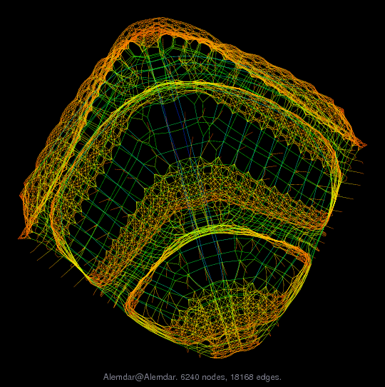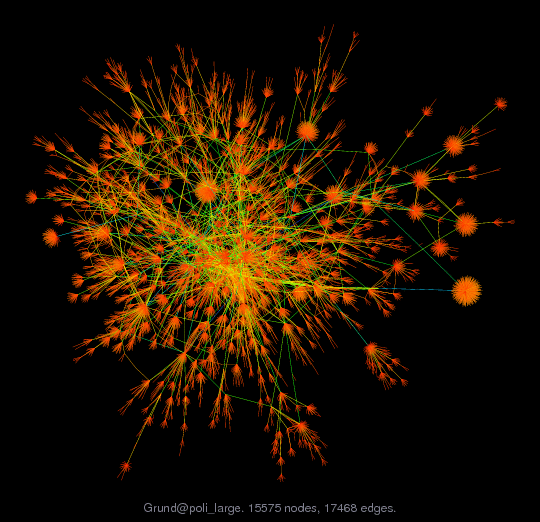
They are seen in all kinds of industries
- Social Networks
- Communication Networks
- Road Networks
- Product Networks
- ...
There are different ways to solve the collaborative problem
- Item Similarity / Nearest Neighbors
- Factorization and Latent Dimensions
Matrix Factorization
Matrix Factorization is the process of splitting (factoring) one matrix into two

You can think of it like pulling apart a matrix
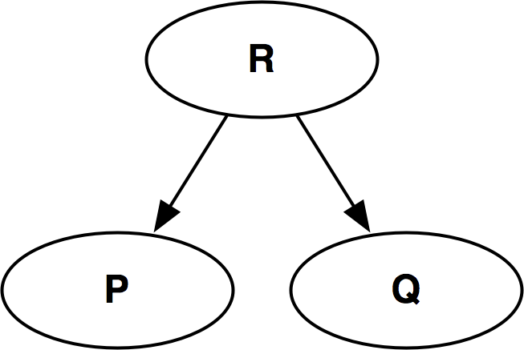This lets us capture the relationships between each item and user
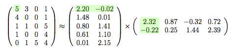 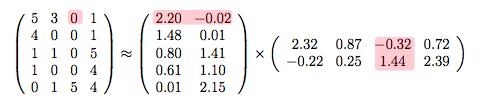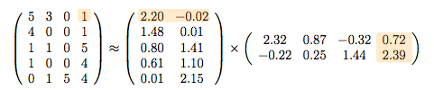
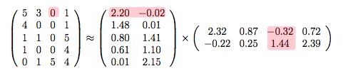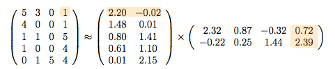

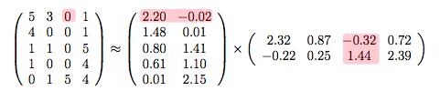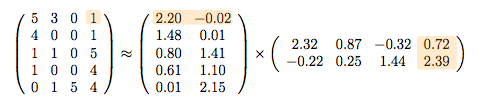We choose a cost function that we can minimize.
Regularized Square Error
We find our factor matrices using an optimization routine
e.g. gradient descent

Building on the Matrix Factorization Model
Accounting for bias
Some users in general rate higher or lower. Some movies
get better reviews. We can account for this bias. Our new parameters b_i and b_u
represent a deviation from the mean.
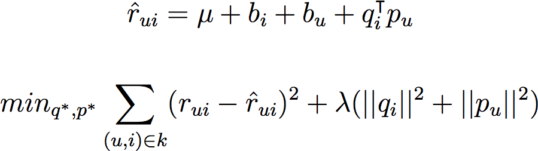
Including Additional Information
Maybe we want a hybrid content/collaborative approach. For example: movie descriptions,
genre, actors & directors involved, user age.
Temporal Dynamics
Paying attention to time is useful. Maybe a users ratings change
over time. Maybe various genres go into and out of popularity.
Confidence Intervals
We can use confidence intervals to account somewhat for uncertainty.
The Factorization Machine
What is this?
car
legos!
The Factorization Machine.
- Matrix factorization is a specialized case of the factorization machine.
- It's a generalized learning algorithm, thus it's much more flexible.
- It's great at dealing with sparse data, so it continues to perform well for collaborative filtering problems.
The FM Model
The n-degree FM Model
We Change the Data Representation
The FM is a general learner, so we have to adjust the way we represent our data.
Questions?
Thanks!
Paul English
References
Reading & Images
- Rendle, “Factorization Machines with libFM,” 2012.
- Rendle, et.al., “Fast context-aware recommendations with factorization machines,” 2011.
- Freudenthaler, et.al., “Bayesian factorization machines,” 2011.
- Adams, et.al., “Incorporating Side Information in Probabilistic Matrix Factorization with Gaussian Processes,” 2010.
- Rendle, “Factorization machines,” 2010.
- Schmidt, et.al., “Bayesian Non-negative Matrix Factorization,” 2009.
- Koren, et.al., “Matrix factorization techniques for recommender systems,” 2009.
- Salakhutdinov and Mnih, “Bayesian probabilistic matrix factorization using Markov chain Monte Carlo,” 2008.
- Salakhutdinov and Mnih, “Probabilistic Matrix Factorization.,” 2007.
- http://www.cise.ufl.edu/research/sparse/matrices/
- http://snap.stanford.edu/data/index.html
- http://www.mathworks.com/help/matlab/creating_plots/display-quiver-plot-over-contour-plot.html
- http://seankenney.com/portfolio/mazda/